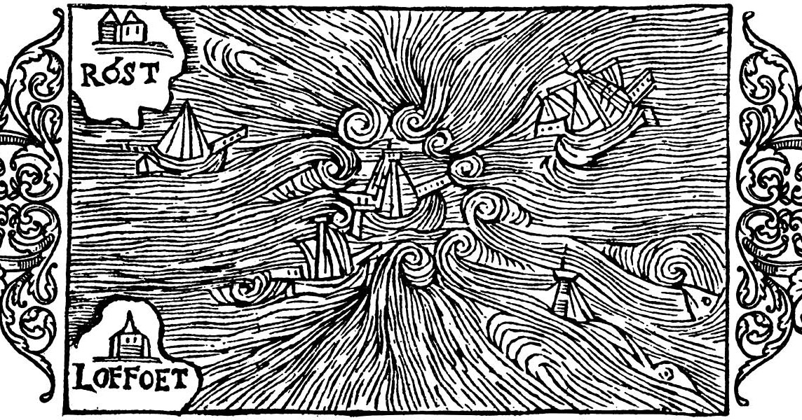
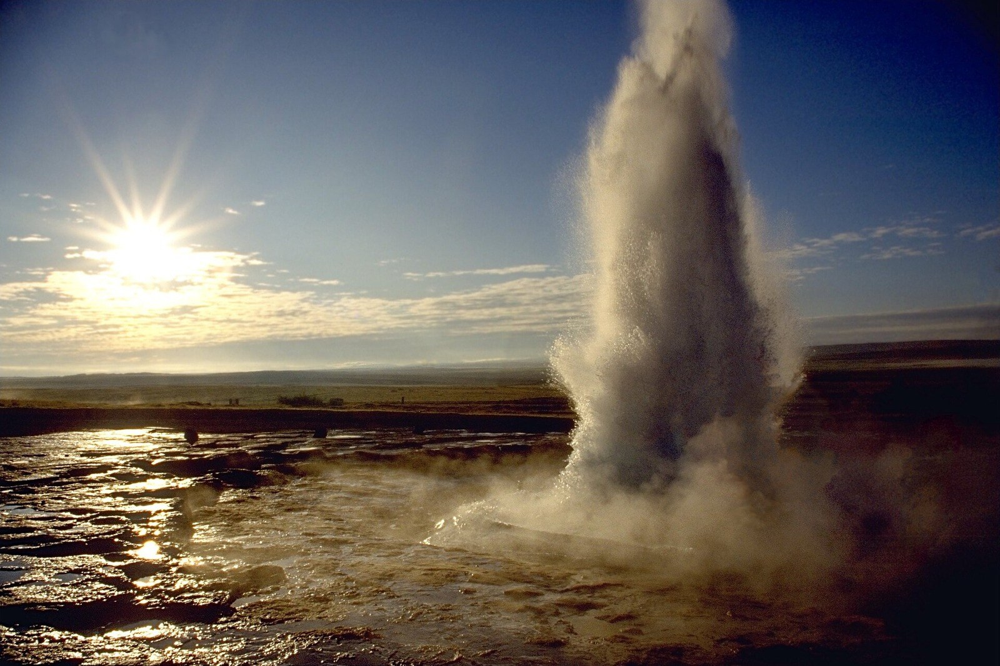
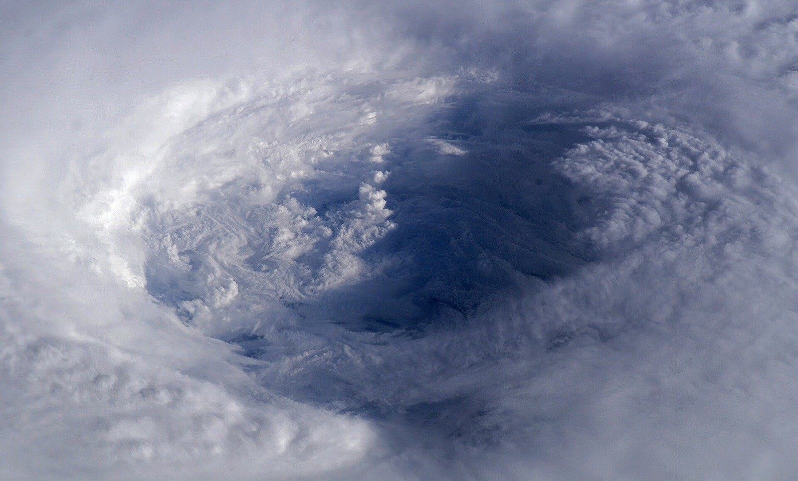
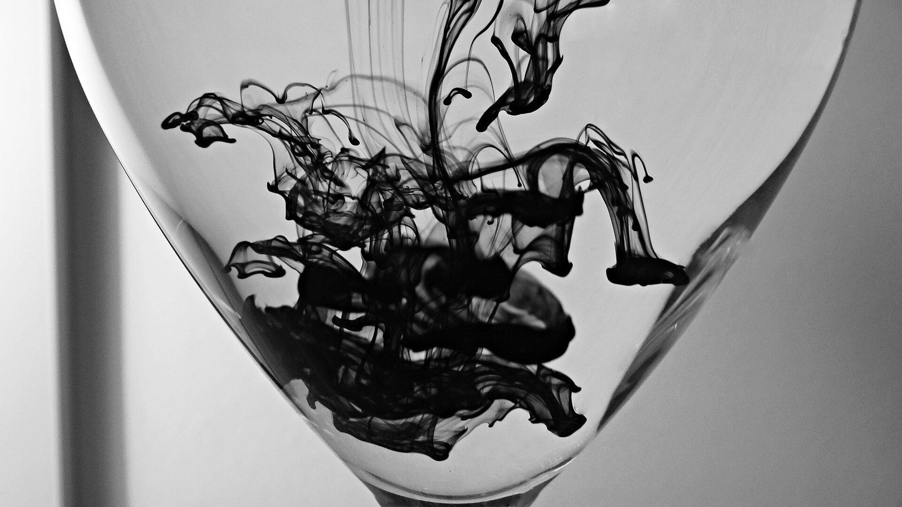

第24回
海の水が、一点のまわりを巻きながら流れていく様子が、線の流れで描かれている。
オラウス・マグヌス『大渦巻と潮』の木版（1555年刊とCommonsにある）／Public domain／Wikimedia Commons（左右の飾りの一部を切り落とした）
前回は、スカラー場から「いちばん増える向き」のベクトル場（勾配）を作った。この回は逆向きに、ベクトル場から数を取り出す。小さな正方形から出ていく量が発散 $\nabla\cdot\boldsymbol v$（湧き出し）、小さな正方形のまわりを回る量が回転 $\nabla\times\boldsymbol v$（渦）である。どちらも「小さな正方形の出入りを数えて、面積で割る」という同じ計算から出てくることを、省略せずに導く。最後に、勾配の発散としてラプラシアン $\nabla^2$ を定義する。
第1回から続く約束どおり、新しい記号は緑色の枠（記号）で「①読み方 ②日本語での意味 ③省略していない書き方 ④どこで出会うか」を書く。この回の主役は $\nabla\cdot$（ナブラ・ドット）、$\nabla\times$（ナブラ・クロス）、$\nabla^2$（ナブラ・2乗）の3つである。前回の記号 $\nabla$ は「各変数で偏微分して並べよ」という命令だった。この回は、その命令を内積の形と外積の形でベクトル場に当てる。
各節は、「なぜ必要か → 定義 → 数値で一度手を動かす → 導出 → 確かめ → よくある誤解」の順に進む。高校・1年で習った内容も、短く一度は書く。覚えている部分は飛ばしてよい。
この回の数値例は、前回 1.2 で出した2つのベクトル場 $\boldsymbol v_A=(-y,\,x)^{\mathsf T}$（回る場）と $\boldsymbol v_B=(x,\,y)^{\mathsf T}$（湧き出す場）を何度も使う。前回 1.2 に戻れば、矢印の絵がある。
最初に、この回で新しく説明する記号と、前の回で説明済みの記号を分けて並べる。右の列の「→」で説明のある場所へ飛べる。
| 記号 | 読み方 | ざっくりした意味 | 説明 |
|---|---|---|---|
| $\boldsymbol v=(P,Q,R)^{\mathsf T}$（成分の名前 $P,Q,R$） | ピー・キュー・アール | ベクトル場の3つの成分（関数）につける名前。$v_1,v_2,v_3$ と同じもの | →1.1 |
| $\operatorname{div}\boldsymbol v$、$\nabla\cdot\boldsymbol v$（発散） | ダイバージェンス・ブイ、ナブラ・ドット・ブイ | 点のまわりから湧き出す量（単位面積・単位体積あたり）を表す数 | →2.1 |
| 発散の書き方の省略の段階（S0〜S3） | ― | $\operatorname{div}\boldsymbol v(\boldsymbol a)$ から $\nabla\cdot\boldsymbol v$ までの4段 | →2.1 |
| $\operatorname{rot}\boldsymbol v$、$\operatorname{curl}\boldsymbol v$、$\nabla\times\boldsymbol v$（回転） | ローテーション・ブイ、カール・ブイ、ナブラ・クロス・ブイ | 点のまわりで渦を巻く強さと向きを表すベクトル（2次元では数） | →3.1 |
| $\nabla^2f$、$\Delta f$（ラプラシアン） | ナブラ・2乗・エフ、デルタ・エフ、ラプラシアン・エフ | $f$ の勾配の発散。$f_{xx}+f_{yy}+f_{zz}$ | →4.1 |
| ラプラシアンの書き方の省略の段階（S0〜S4） | ― | $\operatorname{div}(\operatorname{grad}f)$ から $\Delta f$ までの5段 | →4.1 |
| 調和関数 | ちょうわかんすう | $\nabla^2f=0$ を満たす関数 | →4.2 |
| 記号 | 意味 | 初出 |
|---|---|---|
| $:=$、$=$、$\approx$ | 左の名前を右の式で決める／等しい／ほぼ等しい | 第1回 2.2、2.1、2.4 |
| $f(x,y)$（多変数関数）、定義域 | 入力が複数の関数、入力の集まり | 第3回 6.1、第3回 |
| 太字ベクトル $\boldsymbol a$、成分 $a_i$、転置 $\mathsf T$、ノルム $\|\boldsymbol a\|$、単位ベクトル | 数の組、その中の数、縦横を入れ替える、長さ、長さ1のベクトル | 第5回、第5回、第5回、第5回 6.1、第5回 6.2 |
| 内積 $\boldsymbol a\cdot\boldsymbol b$ | 成分どうしを掛けて足した数 | 第5回 7.2 |
| 外積 $\boldsymbol a\times\boldsymbol b$ | 3次元の2つのベクトルから、両方に直角なベクトルを作る | 第5回 |
| $\lim$、$o(\cdot)$（ランダウの記号） | 極限、「それより速く0に近づく」 | 第6回、第6回 |
| $\Delta x$、1次近似 | 変化量、接線で置き換える近似 | 第7回、第8回 |
| $f''$（2階微分）、テイラー展開 | 導関数の導関数、多項式で真似る | 第8回、第9回 |
| 定積分 $\int_a^b$ | 細かく刻んだ和の極限 | 第10回 |
| $\dfrac{\partial f}{\partial x}$、$f_x$（偏微分）、高階偏微分と順序交換 | 他の変数を止めて1つだけ動かした微分、$f_{xy}=f_{yx}$（連続なら） | 第11回 2.1、3.1、5.1 |
| 連鎖律、物質微分 $(\boldsymbol u\cdot\nabla)$ | 合成の微分、流れに乗って見る変化率 | 第12回、第12回 4.6 |
| 行列式 $\det$ | 3×3 の行列式は第1行で展開できる | 第18回 |
| 場、スカラー場、ベクトル場、位置ベクトル $\boldsymbol r$、等位線 | 点ごとに数／ベクトルが決まっているもの | 第23回 1.1、1.1、1.1、1.1、1.3 |
| $\nabla$（ナブラ）、$\nabla f$（勾配） | 「各変数で偏微分して並べよ」の命令、偏微分を並べたベクトル | 第23回 3.2、3.2 |
| ポテンシャル $\phi$、$\boldsymbol F=-\nabla\phi$ | ベクトル場の元になるスカラー場 | 第23回 4.2 |
PHOTO 1｜現実

地面の一点から水が湧き、まわりへ広がっていく。
Andreas Tille（1996年、ストロックル間欠泉の噴出）／CC BY-SA 3.0／Wikimedia Commons（縮小した）
MITATE 1｜見立て
竜の口という一点から、竹筒へ水が注ぐ手水舎である。
Hyppolyte de Saint-Rambert（2023年、京都・清明神社の手水舎）／CC BY 4.0／Wikimedia Commons（縮小した）
前回 1.2 で、平面のベクトル場を2つ描いた。
$$ \boldsymbol v_A(x,y)=\begin{pmatrix}-y\\ x\end{pmatrix}\ \text{（原点のまわりを回る）},\qquad \boldsymbol v_B(x,y)=\begin{pmatrix}x\\ y\end{pmatrix}\ \text{（原点から湧き出す）} $$
矢印の絵を見れば、「回っている」「湧き出している」とは言える。しかし、これは目で見た印象にすぎない。工学では次の問いに数で答えたい。
温度の場には勾配という「1つの点で定義できる量」があった。ベクトル場にも、「1つの点で定義できる、湧き出しと渦の量」を作りたい。そのために、成分に名前をつけておく。
ベクトル場 $\boldsymbol v$ の3つの成分は、それぞれ点 $(x,y,z)$ の関数である。これに名前をつける。
$$ \boldsymbol v(x,y,z)=\begin{pmatrix}P(x,y,z)\\ Q(x,y,z)\\ R(x,y,z)\end{pmatrix} $$
平面（2次元）なら $\boldsymbol v(x,y)=(P(x,y),\ Q(x,y))^{\mathsf T}$。$P,Q,R$ は第5回の $v_1,v_2,v_3$（成分）と同じものを、別の文字で呼んだだけである。数学のベクトル解析ではこの文字が定番で、流体力学では $(u,v,w)$、電磁気学では $(E_x,E_y,E_z)$ を使う。この教材では、前回の例 $\boldsymbol v_A$ なら $P=-y$、$Q=x$、$\boldsymbol v_B$ なら $P=x$、$Q=y$ である。
水の流れを矢印で描き、その中に小さな正方形を1つ置くと図1.1 になる。
方針は、点のまわりに小さな正方形を置き、その4辺で流れの出入りを数えることである。1つの点では「出入り」という言葉が意味をもたないので、まず小さな正方形で数え、次に面積で割って、正方形を点へ縮める。前回 2.3 の方向微分が「差を $h$ で割って $h\to0$」だったのと同じ型である。
平面のベクトル場 $\boldsymbol v=(P,Q)^{\mathsf T}$ を、水の流れの速度と読む。点 $(x,y)$ を左下の角とする、1辺 $h$ の小さな正方形 $[x,x+h]\times[y,y+h]$ を考える（$h\gt0$）。
「流れが辺を通って出ていく量」を決める。辺を横切る向きの速度成分 × 辺の長さ × 1秒、が1秒間に通る水の面積（2次元なので体積ではなく面積）である。辺に垂直な速度成分がプラス（外向き）なら出ていく、マイナスなら入ってくる、と数える。
右の辺（$x$ 座標が $x+h$、$y$ から $y+h$ まで）。外向きは $+x$ 向きだから、外向きの速度成分は $P$。辺の上の点 $(x+h,\ y+s)$（$0\le s\le h$）での値は $P(x+h,y+s)$。
左の辺（$x$ 座標が $x$）。外向きは $-x$ 向きだから、外向きの速度成分は $-P$。点 $(x,\ y+s)$ での値は $-P(x,y+s)$。
左右の辺を合わせた「外へ出ていく量」は、辺の長さ $h$ 分を $s$ で足し合わせる（定積分）：
$$ \int_0^h\bigl[P(x+h,\,y+s)-P(x,\,y+s)\bigr]\,ds $$
ここで同じ高さ $y+s$ の右と左の値を、先に引き算したのが大事な点である（理由は、次の ① で見る）。
① 角括弧の中は、$y+s$ を止めて $x$ だけを $h$ 動かしたときの $P$ の変化である。1次近似（偏微分の定義そのもの）から、
$$ P(x+h,\,y+s)-P(x,\,y+s)\approx\frac{\partial P}{\partial x}(x,\,y+s)\cdot h $$
② 右辺の $\dfrac{\partial P}{\partial x}(x,\,y+s)$ は、$s$ が $0$ から $h$ まで動いても、$h$ が小さければほとんど変わらない。それを点 $(x,y)$ での値 $\dfrac{\partial P}{\partial x}(x,y)$ で置き換える。すると被積分関数が定数になる。
③ 定数の積分は、定数 × 区間の長さ：
$$ \int_0^h\frac{\partial P}{\partial x}(x,y)\,h\,ds=\frac{\partial P}{\partial x}(x,y)\cdot h\cdot h=\frac{\partial P}{\partial x}(x,y)\,h^2 $$
上の辺・下の辺も、向きの約束を入れ替えるだけで同じ形になる。上の辺（$y$ 座標が $y+h$）の外向きは $+y$ 向きで速度成分は $Q$、下の辺（$y$ 座標が $y$）の外向きは $-y$ 向きで速度成分は $-Q$ である。したがって
$$ \int_0^h\bigl[Q(x+s,\,y+h)-Q(x+s,\,y)\bigr]\,ds\approx\frac{\partial Q}{\partial y}(x,y)\,h^2 $$
右の辺と左の辺で出入りする量を、同じ高さどうしで比べたのが図1.2 である。
4辺の合計は
$$ (\text{正方形から出ていく量})\approx\Bigl(\frac{\partial P}{\partial x}+\frac{\partial Q}{\partial y}\Bigr)(x,y)\,h^2 \qquad(1.1) $$
正方形の面積は $h^2$ だから、単位面積あたりに出ていく量は、$(1.1)$ を $h^2$ で割って $h\to0$ とした極限で、$\dfrac{\partial P}{\partial x}+\dfrac{\partial Q}{\partial y}$ になる。
4辺の出入りを合計すると図1.3 になる（$\boldsymbol v_B=(x,y)^{\mathsf T}$、角 $(1,1)$、$h=0.1$）。
数値で手を動かす。$\boldsymbol v_B=(x,y)^{\mathsf T}$、角 $(x,y)=(1,1)$、$h=0.1$。
① 右の辺（$x=1.1$）：外向きの速度成分は $P=x=1.1$（辺の上でどこでも同じ）。出ていく量は $1.1\times0.1=0.11$。
② 左の辺（$x=1$）：外向きの速度成分は $-P=-1$。出ていく量は $-1\times0.1=-0.1$（入ってくる）。
③ 上の辺（$y=1.1$）：$Q=y=1.1$。$1.1\times0.1=0.11$。下の辺（$y=1$）：$-Q=-1$、$-0.1$。
④ 合計：$0.11-0.1+0.11-0.1=0.02$。面積 $h^2=0.01$ で割ると $0.02/0.01=2$。
⑤ 確かめ：$\dfrac{\partial P}{\partial x}+\dfrac{\partial Q}{\partial y}=\dfrac{\partial x}{\partial x}+\dfrac{\partial y}{\partial y}=1+1=2$。④と一致する。
次は渦である。同じ正方形の4辺を、反時計回りに一周する。各辺で、「辺の向きに沿った速度成分」× 辺の長さ を足す。流れが辺の向きと同じなら正（背中を押される）、逆なら負（向かい風）と数える。この合計を、正方形のまわりの循環（回る量）と呼ぶことにする（正式な名前は第25回の線積分で与える）。
反時計回りの順に、4辺を見る。
1.2 と同じく、向かい合う2辺をペアにして、先に引き算する。下と上は同じ $P$ の列、右と左は同じ $Q$ の列だからである。
① 下と上：$\displaystyle\int_0^hP(x+s,y)\,ds-\int_0^hP(x+s,y+h)\,ds=-\int_0^h\bigl[P(x+s,\,y+h)-P(x+s,\,y)\bigr]\,ds$。
② 角括弧は、$x+s$ を止めて $y$ だけを $h$ 動かしたときの $P$ の変化：$\approx\dfrac{\partial P}{\partial y}(x,y)\,h$。
③ 定数の積分：$-\dfrac{\partial P}{\partial y}(x,y)\,h\cdot h=-\dfrac{\partial P}{\partial y}\,h^2$。
④ 右と左：$\displaystyle\int_0^h\bigl[Q(x+h,\,y+s)-Q(x,\,y+s)\bigr]\,ds\approx\dfrac{\partial Q}{\partial x}(x,y)\,h^2$。
⑤ 4辺の合計：
$$ (\text{正方形のまわりの循環})\approx\Bigl(\frac{\partial Q}{\partial x}-\frac{\partial P}{\partial y}\Bigr)(x,y)\,h^2 \qquad(1.2) $$
同じ正方形の4辺を反時計回りにたどって、流れの辺に沿った成分を足すと図1.4 になる（$\boldsymbol v_A=(-y,x)^{\mathsf T}$、角 $(1,1)$、$h=0.1$）。
面積 $h^2$ で割って $h\to0$ とすれば、単位面積あたりの循環は $\dfrac{\partial Q}{\partial x}-\dfrac{\partial P}{\partial y}$。
数値で手を動かす。$\boldsymbol v_A=(-y,x)^{\mathsf T}$、角 $(1,1)$、$h=0.1$。
① 下の辺（$y=1$、右向き）：沿った成分は $P=-y=-1$。$-1\times0.1=-0.1$。
② 右の辺（$x=1.1$、上向き）：沿った成分は $Q=x=1.1$。$1.1\times0.1=0.11$。
③ 上の辺（$y=1.1$、左向き）：沿った成分は $-P=-(-1.1)=1.1$。$1.1\times0.1=0.11$。
④ 左の辺（$x=1$、下向き）：沿った成分は $-Q=-1$。$-0.1$。
⑤ 合計：$-0.1+0.11+0.11-0.1=0.02$。面積 $0.01$ で割って $2$。
⑥ 確かめ：$\dfrac{\partial Q}{\partial x}-\dfrac{\partial P}{\partial y}=\dfrac{\partial x}{\partial x}-\dfrac{\partial(-y)}{\partial y}=1-(-1)=2$。⑤と一致する。
同じ点で $\boldsymbol v_B=(x,y)^{\mathsf T}$ を試す。今度は $P=x$ が下の辺の上で変化するので、辺に沿って足す（定積分）。下の辺：$\int_0^{0.1}(1+s)\,ds=0.1+0.005=0.105$。右の辺（$Q=y$）：$\int_0^{0.1}(1+s)\,ds=0.105$。上の辺（左向き、沿った成分 $-P=-x$）：$-0.105$。左の辺（下向き、沿った成分 $-Q=-y$）：$-0.105$。合計は $0.105+0.105-0.105-0.105=0$。湧き出す場は、正方形のまわりを回らない（$Q_x-P_y=0-0=0$ と一致）。
「4辺で数える」ことは、近似の話ではない。$h$ を有限の大きさのまま使うと、辺の上で $P,Q$ が変化するため、$(1.1)$ と $(1.2)$ の「$\approx$」には誤差が出る。主張しているのは、誤差が $h^2$ より速く0に近づくこと、すなわち $h^2$ で割って $h\to0$ とした極限が正確に $P_x+Q_y$、$Q_x-P_y$ になることである。1次式の場（$\boldsymbol v_A,\boldsymbol v_B$）では誤差がゼロなので、数値例が一致した。
もう1つ。上の導出では $P,Q$ が連続な偏導関数をもつ（滑らか）と仮定した。尖った場では、極限が存在するとは限らない。
MITATE 2｜見立て
胴の左右から、数えきれない腕が、放射状に広がる。
Michael Gunther（2000年撮影、東寺の千手観音像）／CC BY-SA 4.0／Wikimedia Commons（縮小した）
1.2 で、単位面積あたりに出ていく量が $\dfrac{\partial P}{\partial x}+\dfrac{\partial Q}{\partial y}$ になった。これに名前をつける。
①読み方：「ダイバージェンス・ブイ」「ナブラ・ドット・ブイ」。日本語で「$\boldsymbol v$ の発散」。
②日本語での意味：ベクトル場 $\boldsymbol v$ の、各成分をその成分と同じ方向の変数で偏微分して足したもの。点ごとに1つの数（ベクトルではない）が決まるので、$\operatorname{div}\boldsymbol v$ はスカラー場である。正なら湧き出し、負なら吸い込み。
③省略していない書き方：$\boldsymbol v=(P,Q,R)^{\mathsf T}$、点 $\boldsymbol a=(a_1,a_2,a_3)^{\mathsf T}$ として
$$ \operatorname{div}\boldsymbol v(\boldsymbol a):=\frac{\partial P}{\partial x}(\boldsymbol a)+\frac{\partial Q}{\partial y}(\boldsymbol a)+\frac{\partial R}{\partial z}(\boldsymbol a) $$
平面なら最後の項がなく $\dfrac{\partial P}{\partial x}(\boldsymbol a)+\dfrac{\partial Q}{\partial y}(\boldsymbol a)$。$n$ 変数なら $\displaystyle\sum_{i=1}^n\frac{\partial v_i}{\partial x_i}(\boldsymbol a)$（第4回の総和）。$P$ は $x$ で、$Q$ は $y$ で、$R$ は $z$ で偏微分する。$P$ を $y$ で微分したりしない。
④どこで出会うか：流体の連続の式（質量保存）、電磁気学のガウスの法則 $\nabla\cdot\boldsymbol E=\rho/\varepsilon_0$、熱の式（この回の 4.4）、発散定理（第26回）。
$\nabla\cdot\boldsymbol v$ という書き方は、前回の$\nabla$を、形のうえで内積に見立てたものである。$\nabla=(\partial_x,\ \partial_y,\ \partial_z)^{\mathsf T}$（$\partial_x$ は $\dfrac{\partial}{\partial x}$ の略）と $\boldsymbol v=(P,Q,R)^{\mathsf T}$ の「内積」は、成分どうしを掛けて足す：$\partial_x P+\partial_y Q+\partial_z R$。ここで「掛ける」は「$\partial_x$ を $P$ に作用させる」という意味に読む。したがって $\nabla\cdot\boldsymbol v=\operatorname{div}\boldsymbol v$。この書き方の省略の段階を、次の表で見ておく。以後、短い形を使うときはこの表に戻ること。
| 段階 | 書き方 | 何を省いたか | 省いても誤解が起きない理由／起きる場面 |
|---|---|---|---|
| S0 | $\operatorname{div}\boldsymbol v(\boldsymbol a):=\dfrac{\partial P}{\partial x}(\boldsymbol a)+\dfrac{\partial Q}{\partial y}(\boldsymbol a)+\dfrac{\partial R}{\partial z}(\boldsymbol a)$ | （省略なし）。点 $\boldsymbol a$ での値であることを明示 | ― |
| S1 | $\operatorname{div}\boldsymbol v=\dfrac{\partial P}{\partial x}+\dfrac{\partial Q}{\partial y}+\dfrac{\partial R}{\partial z}$ | 点 $\boldsymbol a$ を書かない。「場」として式を書く | 左右とも同じ点で評価すると約束していれば、S0 に戻れる（第12回の評価点の省略と同じ）。点ごとに値が変わる場だと分かっていること |
| S2 | $\operatorname{div}\boldsymbol v=P_x+Q_y+R_z$ | 偏微分を下つき文字にする（第11回 3.1） | $P_x$ は「$P$ を $x$ で偏微分」。$Q_y$ と $R_z$ も、同じ文字の対だと確認できる |
| S3 | $\nabla\cdot\boldsymbol v$ | 成分 $P,Q,R$ と各変数を書かない。$\nabla$ との内積の形にする | $\nabla=(\partial_x,\partial_y,\partial_z)^{\mathsf T}$ と約束済みなら S1 に戻れる。起きる場面：$\boldsymbol v\cdot\nabla$ と順序を逆にすると、別のもの（物質微分の演算子）になる（2.6）。極座標など別の座標では S3 の形のまま成分を書き下せない（第27回） |
① $\boldsymbol v_B=(x,y)^{\mathsf T}$：$P=x$、$Q=y$。$P_x=1$、$Q_y=1$。$\operatorname{div}\boldsymbol v_B=1+1=2$。
② $\boldsymbol v_A=(-y,x)^{\mathsf T}$：$P=-y$、$Q=x$。$P_x=\dfrac{\partial(-y)}{\partial x}=0$（$-y$ は $x$ を含まない）、$Q_y=\dfrac{\partial x}{\partial y}=0$。$\operatorname{div}\boldsymbol v_A=0$。
③ 位置で変わる例：$\boldsymbol v=(x^2,\ 0)^{\mathsf T}$。$P_x=2x$、$Q_y=0$。$\operatorname{div}\boldsymbol v=2x$。点 $(1,0)$ で $2$、点 $(-1,0)$ で $-2$、点 $(0,0)$ で $0$。
④ 3次元：$\boldsymbol v=(xy,\ yz,\ zx)^{\mathsf T}$。$P_x=\dfrac{\partial(xy)}{\partial x}=y$、$Q_y=\dfrac{\partial(yz)}{\partial y}=z$、$R_z=\dfrac{\partial(zx)}{\partial z}=x$。$\operatorname{div}\boldsymbol v=y+z+x$。点 $(1,2,3)$ で $2+3+1=6$。
③の確かめ：$\boldsymbol v=(x^2,0)$ は、$x\gt0$ では右向きで、右へ行くほど矢印が長い（速くなる）。流れが加速する所では、水は引き伸ばされて薄くなるので湧き出し（正）。$x\lt0$ では右向きで、右へ行くほど矢印が短い（ゆっくりになる）。水が詰まるので吸い込み（負）。符号の見立てが合っている。
1.2 は「正方形から出ていく量」だった。流れに乗って動く小さな領域を考えると、この量は領域の面積が増える速さに読み替えられる（領域の境界が流れとともに外へ動くと、その分だけ面積が増える）。単位面積あたりで言えば、
$$ \frac{(\text{面積の増える速さ})}{(\text{面積})}\ \to\ \operatorname{div}\boldsymbol v\qquad(\text{領域を点に縮めたとき}) $$
これを $\boldsymbol v_B=(x,y)^{\mathsf T}$ で確かめる。位置 $(X(t),Y(t))$ が速度 $\boldsymbol v_B$ で動くとは、$X'=X$、$Y'=Y$。解は $X=X_0e^t$、$Y=Y_0e^t$（微分すると自分自身に戻る、第7回の $e^t$）。どの点も、時刻 $t$ に原点から $e^t$ 倍の位置へ動く。したがって領域全体が $e^t$ 倍に相似拡大され、面積は $(e^t)^2=e^{2t}$ 倍になる。面積の増える速さの比：
$$ \frac{d}{dt}\bigl(e^{2t}\bigr)\Big|_{t=0}=2e^{2t}\Big|_{t=0}=2=\operatorname{div}\boldsymbol v_B $$
数値：$t=0.3$ で長さは $e^{0.3}\approx1.350$ 倍、面積は $e^{0.6}\approx1.822$ 倍。
流れ $\boldsymbol v_B=(x,y)^{\mathsf T}$ に乗って動く円板の、時刻 $t=0$ と $t=0.3$ の位置を重ねると図2.1 になる。
符号の読み方を、次の表にまとめる。
| $\operatorname{div}\boldsymbol v$ の値 | 流れの様子 | 流れに乗った小領域の面積 | 例 |
|---|---|---|---|
| 正（$\gt0$） | 湧き出し（源）。周囲へ広がる | 増える | $\boldsymbol v=(x,y)$：$2$ |
| 負（$\lt0$） | 吸い込み（沈み込み）。中心へ集まる | 減る | $\boldsymbol v=(-x,-y)$：$-2$ |
| 0 | 出ていく量と入ってくる量が等しい | 変わらない | $\boldsymbol v=(x,-y)$：$1-1=0$。$\boldsymbol v=(-y,x)$：$0$ |
発散の符号を、3つの場の矢印で見比べると図2.2 になる。
水のように縮まない流体（非圧縮性流体）では、流れの中の領域の面積（3次元では体積）が変わらない。したがって非圧縮流れでは至るところ $\operatorname{div}\boldsymbol v=0$。この条件は流体力学でたびたび現れる。
3次元で、原点の点電荷がつくる電場（前回4.2）は $\boldsymbol E=k\,\dfrac{\boldsymbol r}{r^3}$（$r=\|\boldsymbol r\|=\sqrt{x^2+y^2+z^2}$、$k$ は正の定数）だった。矢印は外向きで、距離の2乗に反比例して弱くなる。「外向きに矢印が出ているのだから、湧き出しが正のはずだ」と思いたくなる。計算してみる。
① 第1成分：$P=\dfrac{kx}{r^3}$。$x$ で偏微分する。積の微分 $(x\cdot r^{-3})'=1\cdot r^{-3}+x\cdot(r^{-3})_x$。
② $(r^{-3})_x=-3r^{-4}\cdot r_x$（連鎖律）。$r_x=\dfrac{\partial\sqrt{x^2+y^2+z^2}}{\partial x}=\dfrac{2x}{2r}=\dfrac xr$。したがって $(r^{-3})_x=-3r^{-4}\cdot\dfrac xr=-\dfrac{3x}{r^5}$。
③ よって $P_x=k\Bigl(\dfrac1{r^3}-\dfrac{3x^2}{r^5}\Bigr)$。
④ $Q_y$、$R_z$ も、文字 $x$ を $y$、$z$ に入れ替えるだけで同じ形：$Q_y=k\Bigl(\dfrac1{r^3}-\dfrac{3y^2}{r^5}\Bigr)$、$R_z=k\Bigl(\dfrac1{r^3}-\dfrac{3z^2}{r^5}\Bigr)$。
⑤ 足す：$\operatorname{div}\boldsymbol E=k\Bigl(\dfrac3{r^3}-\dfrac{3(x^2+y^2+z^2)}{r^5}\Bigr)=k\Bigl(\dfrac3{r^3}-\dfrac{3r^2}{r^5}\Bigr)=k\Bigl(\dfrac3{r^3}-\dfrac3{r^3}\Bigr)=0$。
原点以外では、湧き出しは0である。理由を、球殻（球の表面の薄い層）で言い直す。距離 $\rho$ の球面を通り抜ける流れの量は「矢印の長さ × 球面の面積」$=\dfrac{k}{\rho^2}\times4\pi\rho^2=4\pi k$ で、$\rho$ によらない。内側の球面から入った量と外側の球面から出る量が等しいので、2つの球面のあいだの殻には、湧き出しも吸い込みもない。外へ向かう矢印は、遠ざかるにつれて弱くなるが、広がる面積が増えるので、通り抜ける総量は同じである。
原点の点電荷の電場 $\boldsymbol E=k\boldsymbol r/r^3$ を、原点を通る断面で描くと図2.3 になる。
なお、原点そのものでは $r=0$ で $\boldsymbol E$ が定義できない。球面を通る総量 $4\pi k$ は0ではないので、湧き出しは「原点という一点」に集中している。これは第26回の発散定理で正確に扱う。
発散は偏微分の和だから、偏微分の規則（第11回、第7回の積の規則）がそのまま使える。
$\boldsymbol v,\boldsymbol w$ をベクトル場、$f$ をスカラー場、$a,b$ を定数とする（すべて偏導関数をもつ）。
(a) 線形性：$\nabla\cdot(a\boldsymbol v+b\boldsymbol w)=a\,\nabla\cdot\boldsymbol v+b\,\nabla\cdot\boldsymbol w$。
(b) 積の規則：$\nabla\cdot(f\boldsymbol v)=(\nabla f)\cdot\boldsymbol v+f\,(\nabla\cdot\boldsymbol v)$。
STEP 1 (a)：成分ごとに、$\dfrac{\partial}{\partial x}(aP+bP')=a\dfrac{\partial P}{\partial x}+b\dfrac{\partial P'}{\partial x}$（偏微分の線形性、第11回）。$y,z$ の成分も同じ。足し合わせて (a)。
STEP 2 (b)：$f\boldsymbol v=(fP,\ fQ,\ fR)^{\mathsf T}$。第1項は積の規則で $\dfrac{\partial(fP)}{\partial x}=\dfrac{\partial f}{\partial x}P+f\dfrac{\partial P}{\partial x}$。
STEP 3 第2項、第3項も同じ形：$\dfrac{\partial(fQ)}{\partial y}=\dfrac{\partial f}{\partial y}Q+f\dfrac{\partial Q}{\partial y}$、$\dfrac{\partial(fR)}{\partial z}=\dfrac{\partial f}{\partial z}R+f\dfrac{\partial R}{\partial z}$。
STEP 4 3つを足す。$f$ の偏微分を含む項：$f_xP+f_yQ+f_zR=\nabla f\cdot\boldsymbol v$（勾配と $\boldsymbol v$ の内積）。$f$ を含む項：$f(P_x+Q_y+R_z)=f\,\nabla\cdot\boldsymbol v$。
使ってみる。$\boldsymbol E=k\,\boldsymbol r/r^n$ の発散（$n$ は定数）。(b) で $f=r^{-n}$、$\boldsymbol v=\boldsymbol r$ とおく。
① $\nabla f=\nabla r^{-n}=-n\,r^{-n-2}\,\boldsymbol r$。
② $(\nabla f)\cdot\boldsymbol r=-n\,r^{-n-2}\,(\boldsymbol r\cdot\boldsymbol r)=-n\,r^{-n-2}\,r^2=-n\,r^{-n}$。
③ $\nabla\cdot\boldsymbol r=\dfrac{\partial x}{\partial x}+\dfrac{\partial y}{\partial y}+\dfrac{\partial z}{\partial z}=1+1+1=3$。
④ (b) に入れる：$\nabla\cdot(r^{-n}\boldsymbol r)=-n\,r^{-n}+r^{-n}\cdot3=(3-n)\,r^{-n}$。
⑤ 確かめ：$n=3$ で $0$。2.4 の直接計算と一致する。$n=0$（$\boldsymbol v=\boldsymbol r$ そのもの）で $3\,r^0=3$。
(1) 発散はベクトルではなく、数である。$\nabla\cdot\boldsymbol v$ は内積の形なので、答えはスカラーになる。
(2) 「矢印が外向き」なら発散が正、とは限らない。2.4 の逆2乗の場は、矢印が外向きなのに、原点以外では発散が0だった。発散が測るのは矢印の向きではなく、矢印の長さが場所とともにどう変わるか（出ていく量と入ってくる量の差）である。
(3) $\nabla\cdot\boldsymbol v$ と $\boldsymbol v\cdot\nabla$ は別物。$\nabla\cdot\boldsymbol v=P_x+Q_y+R_z$ は数。$\boldsymbol v\cdot\nabla=P\,\partial_x+Q\,\partial_y+R\,\partial_z$ は、右に置いた場に働かせる微分の命令（演算子）で、第12回の物質微分に出てきた $(\boldsymbol u\cdot\nabla)$ はこちらである。$\nabla$ は命令なので、前回 3.2 のとおり、式の中で勝手に動かせない。
(4) 「発散」という言葉が2つある。この回の発散（divergence）は、湧き出しの量。第14回の級数の発散（和が有限の値に収束しない）とは、名前が同じだけで別の概念である。英語ではどちらも divergence（動詞は diverge）という同じ単語だが、数学の中では別の用語として使い分ける。
PHOTO 3｜現実

雲が、中心のまわりを巻いて、渦をつくっている。
Ed Lu（NASA宇宙飛行士。2003年、国際宇宙ステーションから見たハリケーン・イザベルの目）／Public domain／Wikimedia Commons（縮小した）
MITATE 3｜見立て
座した人びとの前で、衣をひるがえして回る人びとがいる。
『ニザームッディーン・アウリヤー師の前でのスーフィーのサマー』（1485年。書家 Muhammad-i Azhar。チェスター・ビーティー図書館蔵）／Public domain／Wikimedia Commons（縮小した）
1.3 で、小さな正方形のまわりを反時計回りに回る量が、単位面積あたり $\dfrac{\partial Q}{\partial x}-\dfrac{\partial P}{\partial y}$ になった。平面では、この1つの数で十分である。3次元では、渦には回る面の向きがあるので、$xy$ 平面の正方形のほかに、$yz$ 平面と $zx$ 平面の正方形でも同じ計算をする。その3つの数を並べたベクトルが回転である。
文字の置き換えは $x\to y\to z\to x$ の順に回す（第5回の外積の添字と同じ、巡回の規則）。
①読み方：「ローテーション・ブイ」「カール・ブイ」「ナブラ・クロス・ブイ」。日本語で「$\boldsymbol v$ の回転」。rot は rotation、curl は「巻く」の英語。
②日本語での意味：ベクトル場 $\boldsymbol v$ の、点のまわりの渦の強さと向きを表すベクトル。向きは渦の回転軸（右ねじの進む向き）、長さは渦の強さ。点ごとに1つのベクトルが決まるので、$\operatorname{rot}\boldsymbol v$ はベクトル場である。
③省略していない書き方：3次元の $\boldsymbol v=(P,Q,R)^{\mathsf T}$ について
$$ \operatorname{rot}\boldsymbol v(\boldsymbol a):=\begin{pmatrix}\dfrac{\partial R}{\partial y}(\boldsymbol a)-\dfrac{\partial Q}{\partial z}(\boldsymbol a)\\[3mm]\dfrac{\partial P}{\partial z}(\boldsymbol a)-\dfrac{\partial R}{\partial x}(\boldsymbol a)\\[3mm]\dfrac{\partial Q}{\partial x}(\boldsymbol a)-\dfrac{\partial P}{\partial y}(\boldsymbol a)\end{pmatrix} $$
平面のベクトル場 $\boldsymbol v=(P,Q)^{\mathsf T}$ は、$\boldsymbol v=(P,Q,0)^{\mathsf T}$ で、$P,Q$ が $z$ によらない、と見なす。すると第1・2成分は $0-0=0$ で、回転は $\operatorname{rot}\boldsymbol v=(0,\ 0,\ Q_x-P_y)^{\mathsf T}$ になる。平面の教科書は、この第3成分の数 $Q_x-P_y$ だけを「回転」と呼んで $\operatorname{rot}\boldsymbol v$ と書くことが多い（向きは $z$ 軸の正の向きが反時計回り、と約束してあるので、数1つで足りる）。
④どこで出会うか：流体の渦度、電磁気学のファラデーの法則 $\nabla\times\boldsymbol E=-\partial\boldsymbol B/\partial t$ とアンペールの法則、ストークスの定理（第26回）、保存場の判定（3.6）。
3つの成分の式は覚えにくい。そこで、第5回で外積を $\boldsymbol a\times\boldsymbol b$ と書いたのと同じ形に、$\nabla$ を左、$\boldsymbol v$ を右に置く。$\nabla\times\boldsymbol v$ の成分は、外積の定義で $\boldsymbol a=\nabla=(\partial_x,\partial_y,\partial_z)^{\mathsf T}$、$\boldsymbol b=\boldsymbol v=(P,Q,R)^{\mathsf T}$ とした
$$ \begin{pmatrix}a_2b_3-a_3b_2\\ a_3b_1-a_1b_3\\ a_1b_2-a_2b_1\end{pmatrix}=\begin{pmatrix}\partial_yR-\partial_zQ\\ \partial_zP-\partial_xR\\ \partial_xQ-\partial_yP\end{pmatrix} $$
であり、上の $\operatorname{rot}\boldsymbol v$ と一致する。これを3×3の行列式の第1行展開（第18回）の形に書くと覚えやすい。$\boldsymbol e_1,\boldsymbol e_2,\boldsymbol e_3$ を、$x,y,z$ 方向の長さ1のベクトル（単位ベクトル）として、
$$ \nabla\times\boldsymbol v=\begin{vmatrix}\boldsymbol e_1&\boldsymbol e_2&\boldsymbol e_3\\ \partial_x&\partial_y&\partial_z\\ P&Q&R\end{vmatrix}=\boldsymbol e_1(\partial_yR-\partial_zQ)-\boldsymbol e_2(\partial_xR-\partial_zP)+\boldsymbol e_3(\partial_xQ-\partial_yP) $$
展開の1行ごとの理由：第1行の $\boldsymbol e_1$ には、それを含む行と列を消した2×2の行列式 $\begin{vmatrix}\partial_y&\partial_z\\ Q&R\end{vmatrix}=\partial_yR-\partial_zQ$（対角の積 − 反対角の積）、第1行の $\boldsymbol e_2$ には符号 $-$ をつけて $\begin{vmatrix}\partial_x&\partial_z\\ P&R\end{vmatrix}=\partial_xR-\partial_zP$、$\boldsymbol e_3$ には $\begin{vmatrix}\partial_x&\partial_y\\ P&Q\end{vmatrix}=\partial_xQ-\partial_yP$。中央の項の符号が反転するため、第2成分は $\partial_zP-\partial_xR$ の順になる。
形式的な行列式の展開を、成分ごとに見ると図3.1 になる。
これは覚え方であって、本物の行列式ではない。行列式は「数」に対して定義されたもの（第18回）だが、ここの第2行は偏微分の命令 $\partial_x,\partial_y,\partial_z$ で、数ではない。第3行の $P,Q,R$ との積は「$\partial_x$ を $P$ に作用させる」と読むので、順序が大事である。各項で、$\partial$ を必ず $P,Q,R$ の左に書く。$P\partial_y$（$P$ を掛けてから $\partial_y$ を待つ命令）と順序を入れ替えると、別のものになる。
① $\boldsymbol v_A=(-y,\ x)^{\mathsf T}$（平面）：$P=-y$、$Q=x$。$Q_x=\dfrac{\partial x}{\partial x}=1$、$P_y=\dfrac{\partial(-y)}{\partial y}=-1$。$Q_x-P_y=1-(-1)=2$。
② $\boldsymbol v_B=(x,\ y)^{\mathsf T}$：$P=x$、$Q=y$。$Q_x=\dfrac{\partial y}{\partial x}=0$、$P_y=\dfrac{\partial x}{\partial y}=0$。$Q_x-P_y=0$。
③ ずり流れ：$\boldsymbol v=(y,\ 0)^{\mathsf T}$（高さ $y$ に比例して右向きに速くなる流れ）。$P=y$、$Q=0$。$Q_x=0$、$P_y=\dfrac{\partial y}{\partial y}=1$。$Q_x-P_y=0-1=-1$。
④ 3次元：$\boldsymbol v=(xy,\ yz,\ zx)^{\mathsf T}$（2.2 ④と同じ）、点 $(1,2,3)$。$P=xy$、$Q=yz$、$R=zx$ として偏微分を1つずつ求める。
第1成分 $R_y-Q_z$：$R_y=\dfrac{\partial(zx)}{\partial y}=0$（$zx$ は $y$ を含まない）、$Q_z=\dfrac{\partial(yz)}{\partial z}=y$。$0-y=-y$。点 $(1,2,3)$ で $-2$。
第2成分 $P_z-R_x$：$P_z=\dfrac{\partial(xy)}{\partial z}=0$、$R_x=\dfrac{\partial(zx)}{\partial x}=z$。$0-z=-z$。点で $-3$。
第3成分 $Q_x-P_y$：$Q_x=\dfrac{\partial(yz)}{\partial x}=0$、$P_y=\dfrac{\partial(xy)}{\partial y}=x$。$0-x=-x$。点で $-1$。
したがって $\operatorname{rot}\boldsymbol v=(-y,\ -z,\ -x)^{\mathsf T}$、点 $(1,2,3)$ で $(-2,\ -3,\ -1)^{\mathsf T}$。
⑤ 確かめ（③）：1.3 の方法で、$\boldsymbol v=(y,0)$ の角 $(1,1)$、$h=0.1$ の正方形を数える。下の辺（$y=1$、右向き）：$P=1$、$1\times0.1=0.1$。右の辺（上向き）：$Q=0$、$0$。上の辺（$y=1.1$、左向き）：$-P=-1.1$、$-0.11$。左の辺：$0$。合計 $0.1-0.11=-0.01$。面積 $0.01$ で割って $-1$。③と一致する。
向き。$\operatorname{rot}\boldsymbol v$ の向きは、渦の回転軸である。右手の指を回る向きに曲げたときの親指の向き（右ねじの進む向き）。①の $\boldsymbol v_A$ では、反時計回りに回る渦で、$z$ 軸の正の向き（紙面から手前）に $2$。
回る場 $\boldsymbol v_A=(-y,x)^{\mathsf T}$ に小さな輪を置くと図3.2 になる。
大きさ。剛体（形が変わらない物体）が、原点を通る軸のまわりに、角速度ベクトル $\boldsymbol\omega=(\omega_1,\omega_2,\omega_3)^{\mathsf T}$ で回転しているとき、位置 $\boldsymbol r$ での速度は $\boldsymbol v=\boldsymbol\omega\times\boldsymbol r$（外積）である。ここで $\boldsymbol\omega$ の向きは回転軸、長さは1秒あたりの回転角（rad/s）。成分は
$$ \boldsymbol\omega\times\boldsymbol r=\begin{pmatrix}\omega_2z-\omega_3y\\ \omega_3x-\omega_1z\\ \omega_1y-\omega_2x\end{pmatrix}\qquad(\text{第5回の外積の定義の }a_2b_3-a_3b_2\text{ などに }\boldsymbol a=\boldsymbol\omega,\ \boldsymbol b=\boldsymbol r) $$
この速度場の回転 $\nabla\times(\boldsymbol\omega\times\boldsymbol r)$ を求める。第1成分だけ計算する。
① $P=\omega_2z-\omega_3y$、$Q=\omega_3x-\omega_1z$、$R=\omega_1y-\omega_2x$。
② $R_y=\dfrac{\partial(\omega_1y-\omega_2x)}{\partial y}=\omega_1$。
③ $Q_z=\dfrac{\partial(\omega_3x-\omega_1z)}{\partial z}=-\omega_1$。
④ 第1成分 $R_y-Q_z=\omega_1-(-\omega_1)=2\omega_1$。第2、第3成分は、文字を $1\to2\to3\to1$ と巡回させて $2\omega_2$、$2\omega_3$（同じ計算をそれぞれ行って確かめられる）。
⑤ よって回転する剛体の速度場の回転は、角速度ベクトルの2倍：$\operatorname{rot}(\boldsymbol\omega\times\boldsymbol r)=2\boldsymbol\omega$。①の $\boldsymbol v_A=(-y,x,0)$ は $\boldsymbol\omega=(0,0,1)$ の場合で、$\operatorname{rot}=(0,0,2)$。
「2倍」の理由を、図で確かめる。半径 $\rho$ の円板が角速度 $\Omega$ で回る。円周上の速さは $\Omega\rho$。円周を1周する循環は、速さ × 円周 $=\Omega\rho\cdot2\pi\rho=2\pi\Omega\rho^2$。面積 $\pi\rho^2$ で割ると $2\Omega$。1.3 の「循環 ÷ 面積」が $2\Omega$ になる。この「÷ 面積」が、2倍の出どころである。
一定の角速度で回る円板の縁の速さを描くと図3.3 になる。
回転と発散は別物。$\operatorname{div}(\boldsymbol\omega\times\boldsymbol r)=\dfrac{\partial(\omega_2z-\omega_3y)}{\partial x}+\dfrac{\partial(\omega_3x-\omega_1z)}{\partial y}+\dfrac{\partial(\omega_1y-\omega_2x)}{\partial z}=0+0+0=0$。回る剛体の速度場は、湧き出しがない（体積が変わらない）。
ずり流れ：直線の流れでも、回転は0でない
3.3 の③ $\boldsymbol v=(y,0)$ は、矢印がすべて右向きで、渦を巻いていない。それなのに回転は $-1$ である。矢印の「見た目」で判断してはいけない。理由は、小さな水車（羽根車）を置くと分かる。上の羽根は速い流れ（右向き）に押され、下の羽根はゆっくりな流れに押される。上のほうが強く押されるので、水車は時計回りに回る。時計回りだから回転は負（$-1$）。
ずり流れ $\boldsymbol v=(y,0)^{\mathsf T}$ の中に水車を置くと図3.4 になる。
これに対して湧き出す場 $\boldsymbol v_B$ は、矢印がどちらも外向きで、水車の羽根を左右・上下で同じ強さで押す。水車は回らない（$\operatorname{rot}=0$）。
反対の例もある。$\boldsymbol v=\dfrac{1}{x^2+y^2}\begin{pmatrix}-y\\ x\end{pmatrix}$ は、原点のまわりを反時計回りに回る。矢印の長さは $1/r$（$r=\sqrt{x^2+y^2}$）で、遠いほど短い。原点以外で計算する。
① $P=\dfrac{-y}{x^2+y^2}$、$Q=\dfrac{x}{x^2+y^2}$。
② $Q_x$：商の微分で $\dfrac{1\cdot(x^2+y^2)-x\cdot2x}{(x^2+y^2)^2}=\dfrac{y^2-x^2}{(x^2+y^2)^2}$。
③ $P_y$：$\dfrac{-1\cdot(x^2+y^2)-(-y)\cdot2y}{(x^2+y^2)^2}=\dfrac{-x^2-y^2+2y^2}{(x^2+y^2)^2}=\dfrac{y^2-x^2}{(x^2+y^2)^2}$。
④ $Q_x-P_y=0$。
発散も、$P_x=\dfrac{2xy}{(x^2+y^2)^2}$、$Q_y=\dfrac{-2xy}{(x^2+y^2)^2}$ で $P_x+Q_y=0$。湧き出しも渦も0である。
見た目は回っているのに回転が0になる理由は、内側ほど速く、外側ほど遅いことにある。扇形の小さな領域（半径 $r_1$ から $r_2$、角度の幅 $\Delta\theta$）のまわりを一周すると、内側の円弧に沿って回る量は「速さ $\dfrac1{r_1}$ × 弧の長さ $r_1\Delta\theta$ $=\Delta\theta$」、外側の円弧を逆向きにたどる量は「$-\dfrac1{r_2}\cdot r_2\Delta\theta=-\Delta\theta$」。2本の半径方向の辺は、速度が辺に直角なので何も寄与しない。合計は $\Delta\theta-\Delta\theta=0$。
渦なしの渦 $\boldsymbol v=(-y,x)/r^2$ の矢印と、扇形の小さな領域を描くと図3.5 になる。
回転が0だからといって、原点のまわりを1周する循環も0とは限らない。このベクトル場は、原点で定義されていない。原点のまわりの単位円（半径1）を1周すると、速度 $(-\sin\theta,\cos\theta)$ と、円周の向き $(-\sin\theta,\cos\theta)\,d\theta$ の内積を足し合わせて $\int_0^{2\pi}(\sin^2\theta+\cos^2\theta)\,d\theta=2\pi\ne0$。小さな正方形ごとの回転は0なのに、原点を囲む大きな輪では $2\pi$ が残る。この「穴」の効果は、第25・26回（線積分とストークスの定理）で正確に扱う。
前回 4.2 で、平面のベクトル場 $\boldsymbol F=(P,Q)$ が勾配場 $\nabla\phi$ なら $P_y=Q_x$ でなければならない、という必要条件を作った。$P_y=Q_x$ は $Q_x-P_y=0$ と同じことである。つまり、前回の判定条件は「回転が0」だった。3次元でも同じことが言える。
$\phi$ と $\boldsymbol v$ の2階までの偏導関数がすべて存在して連続とする。
(a) $\nabla\times(\nabla\phi)=\boldsymbol 0$（勾配の回転は零ベクトル）。
(b) $\nabla\cdot(\nabla\times\boldsymbol v)=0$（回転の発散は0）。
STEP 1 (a)：$\nabla\phi=(\phi_x,\phi_y,\phi_z)^{\mathsf T}$ なので $P=\phi_x$、$Q=\phi_y$、$R=\phi_z$。回転の第1成分は $R_y-Q_z=\phi_{zy}-\phi_{yz}$。ここで $\phi_{zy}$ は「$\phi$ を $z$ で偏微分してから $y$ で偏微分」。
STEP 2 2階偏導関数が連続なら、微分の順序は交換できる（第11回 5.1）：$\phi_{zy}=\phi_{yz}$。したがって第1成分は $0$。
STEP 3 第2成分 $P_z-R_x=\phi_{xz}-\phi_{zx}=0$、第3成分 $Q_x-P_y=\phi_{yx}-\phi_{xy}=0$。同じ理由。(a) が言えた。
STEP 4 (b)：$\nabla\times\boldsymbol v=(R_y-Q_z,\ P_z-R_x,\ Q_x-P_y)^{\mathsf T}$ の発散は、第1成分を $x$ で、第2成分を $y$ で、第3成分を $z$ で偏微分して足す：
$$ (R_y-Q_z)_x+(P_z-R_x)_y+(Q_x-P_y)_z=R_{yx}-Q_{zx}+P_{zy}-R_{xy}+Q_{xz}-P_{yz} $$
STEP 5 順序の交換で、$R_{yx}=R_{xy}$、$Q_{zx}=Q_{xz}$、$P_{zy}=P_{yz}$。6つの項は3組ずつ打ち消し合って、合計は0。
数値で確かめる。(a)：$\phi=xyz$ の勾配は $(yz,\ zx,\ xy)^{\mathsf T}$。回転の第1成分 $R_y-Q_z=\dfrac{\partial(xy)}{\partial y}-\dfrac{\partial(zx)}{\partial z}=x-x=0$。第2、第3も $y-y$、$z-z$ で0。(b)：3.3 ④の $\operatorname{rot}\boldsymbol v=(-y,-z,-x)$ の発散は $\dfrac{\partial(-y)}{\partial x}+\dfrac{\partial(-z)}{\partial y}+\dfrac{\partial(-x)}{\partial z}=0+0+0=0$。
(a) の読み替え：回転が0でないベクトル場は、どんなスカラー場の勾配にもならない（対偶）。前回の $\boldsymbol v_A$ が勾配場でないことが、$\operatorname{rot}\boldsymbol v_A=2\ne0$ で言える。
前回の判定条件と回転の関係を、3つのカードにすると図3.6 になる。
(a) の逆（回転が0なら勾配場か）は、定義域に「穴」がないときに成り立つ。穴があると 3.5 の例のように成り立たない（原点を除いた平面では、この $\boldsymbol v$ は回転が0だが勾配場ではない。その理由は第25・26回）。
(a) 線形性：$\nabla\times(a\boldsymbol v+b\boldsymbol w)=a\,\nabla\times\boldsymbol v+b\,\nabla\times\boldsymbol w$。
(b) 積の規則：$\nabla\times(f\boldsymbol v)=(\nabla f)\times\boldsymbol v+f\,(\nabla\times\boldsymbol v)$。
STEP 1 (a)：各成分は偏微分の線形な組み合わせ（$R_y-Q_z$ など）なので、2.5 の (a) と同じ理由で成り立つ。
STEP 2 (b) の左辺の第1成分は $\dfrac{\partial(fR)}{\partial y}-\dfrac{\partial(fQ)}{\partial z}$。
STEP 3 積の規則で $\dfrac{\partial(fR)}{\partial y}=f_yR+fR_y$、$\dfrac{\partial(fQ)}{\partial z}=f_zQ+fQ_z$。引く：$(f_yR-f_zQ)+f\,(R_y-Q_z)$。
STEP 4 $(f_yR-f_zQ)$ は外積 $\nabla f\times\boldsymbol v$ の第1成分（$a_2b_3-a_3b_2$ に $\boldsymbol a=\nabla f$、$\boldsymbol b=\boldsymbol v$）。$f\,(R_y-Q_z)$ は $f\,\nabla\times\boldsymbol v$ の第1成分。第2、第3成分は文字を巡回させて同じ。
(1) 平面の「回転」は数、3次元の「回転」はベクトル。$Q_x-P_y$ は、3次元の回転の第3成分である。教科書がどちらを指しているか（平面か空間か）を、場が何変数かで確かめる。
(2) 回転はベクトル場にしか使えない。スカラー場 $f$ に $\nabla\times f$ は定義されない（外積は2つのベクトルのあいだの演算）。スカラー場に使えるのは勾配 $\nabla f$ である。
(3) 外積の順序。$\nabla\times\boldsymbol v$ と $\boldsymbol v\times\nabla$ は別物である。外積は順序を入れ替えると符号が変わる（第5回）だけでなく、$\nabla$ が微分の命令なので、$\boldsymbol v\times\nabla$ は右に置いたものに働く演算子になる。
(4) 回転が0でも、$\boldsymbol v$ が0とは限らない。$\boldsymbol v_B=(x,y)$ は、回転が0だが、$\boldsymbol v_B\ne\boldsymbol 0$。逆に、回転が0でない場の矢印が直線的でも（ずり流れ）、構わない。
PHOTO 4｜現実

一滴の墨が、水の中でゆっくり広がり、ぼやけていく。
Zvonimir Lončarić（2015年、水に広がる墨）／CC BY-SA 4.0／Wikimedia Commons（縮小した）
MITATE 4｜見立て
水面に浮かべた絵の具が、境をにじませながら、広がっていく。
Metasqaure10（2025年、エブル〔水面の墨流し〕）／CC0／Wikimedia Commons（縮小した）
前回は、スカラー場 $f$ から、勾配 $\nabla f$（ベクトル場）を作った。この回の2節で、ベクトル場から数を作る発散を定義した。2つをつなげれば、スカラー場 $f$ から、もう一度スカラー場が作れる：まず $f$ の勾配 $\nabla f$ を求め、その発散を取る。この操作の名前が必要になる理由は、次の節で分かる。まず定義する。
①読み方：「ナブラ・2乗・エフ」「デルタ・エフ」「ラプラシアン・エフ」。日本語で「$f$ のラプラシアン」。ラプラス（P.-S. Laplace、18〜19世紀のフランスの数学者）の名前による。
②日本語での意味：スカラー場 $f$ の勾配の発散。各変数での2階偏微分（同じ変数で2回）を足したもの。点ごとに1つの数が決まるので、$\nabla^2f$ もスカラー場である。
③省略していない書き方：
$$ \nabla^2f(\boldsymbol a):=\operatorname{div}\bigl(\operatorname{grad}f\bigr)(\boldsymbol a)=\frac{\partial}{\partial x}\Bigl(\frac{\partial f}{\partial x}\Bigr)(\boldsymbol a)+\frac{\partial}{\partial y}\Bigl(\frac{\partial f}{\partial y}\Bigr)(\boldsymbol a)+\frac{\partial}{\partial z}\Bigl(\frac{\partial f}{\partial z}\Bigr)(\boldsymbol a) $$
これは第11回の高階偏微分の書き方で $\dfrac{\partial^2f}{\partial x^2}+\dfrac{\partial^2f}{\partial y^2}+\dfrac{\partial^2f}{\partial z^2}$、あるいは $f_{xx}+f_{yy}+f_{zz}$ と同じ。平面なら $f_{xx}+f_{yy}$、$n$ 変数なら $\displaystyle\sum_{i=1}^n\dfrac{\partial^2f}{\partial x_i^2}$。混合偏微分 $f_{xy}$ などは入らない。
④どこで出会うか：熱の式・拡散方程式（この回の 4.4）、波動方程式（機械力学・電磁波）、ポアソン方程式 $\nabla^2\phi=-\rho/\varepsilon_0$（電磁気学）、シュレーディンガー方程式の運動エネルギーの項（量子力学）、画像処理のエッジ検出。
$\nabla^2$ は、$\nabla\cdot\nabla$（$\nabla$ と $\nabla$ の内積）の略である。$\nabla\cdot\nabla=(\partial_x,\partial_y,\partial_z)\cdot(\partial_x,\partial_y,\partial_z)=\partial_x\partial_x+\partial_y\partial_y+\partial_z\partial_z=\partial_x^2+\partial_y^2+\partial_z^2$。2階微分の記号 $\partial_x^2$ は「$\partial_x$ を2回続けて行う」の意味（第11回）。ここも省略の段階を並べておく。
| 段階 | 書き方 | 何を省いたか | 省いても誤解が起きない理由／起きる場面 |
|---|---|---|---|
| S0 | $\operatorname{div}\bigl(\operatorname{grad}f\bigr)(\boldsymbol a)=\dfrac{\partial}{\partial x}\Bigl(\dfrac{\partial f}{\partial x}\Bigr)(\boldsymbol a)+\cdots$ | （省略なし）。点 $\boldsymbol a$、2つの操作を別々に書く | ― |
| S1 | $\operatorname{div}\operatorname{grad}f=\dfrac{\partial^2f}{\partial x^2}+\dfrac{\partial^2f}{\partial y^2}+\dfrac{\partial^2f}{\partial z^2}$ | 点 $\boldsymbol a$ と、内側のかっこ。2階の偏微分の書き方に変える | $\dfrac{\partial^2f}{\partial x^2}$ は $\dfrac{\partial}{\partial x}\dfrac{\partial f}{\partial x}$ の略（第11回）。順序が入るのは混合偏微分だけなので、同じ変数の2回なら曖昧にならない |
| S2 | $\nabla\cdot(\nabla f)$ | div と grad を、$\nabla$ を使った形に書き換える | 前回の $\nabla f$ と 2.1 の $\nabla\cdot$ をそのまま合わせた形。S1 に戻れる |
| S3 | $\nabla^2f$、$f_{xx}+f_{yy}+f_{zz}$ | かっこを省き、$\nabla\cdot\nabla$ を $\nabla^2$ と書く。または下つきの添字にする | $\nabla^2f$ の「2乗」は2回作用させるという意味で、$\|\nabla f\|^2$ ではない。起きる場面：$(\nabla f)^2$ と混同しやすい。$f=x^2+2y^2$ で $\nabla^2f=6$、$\|\nabla f\|^2=4x^2+16y^2$（点 $(2,1)$ で $32$）。まったく違う |
| S4 | $\Delta f$ | $\nabla^2$ をギリシャ文字 $\Delta$ 1つで書く | $\Delta$ は第7回の変化量 $\Delta x$ と同じ文字なので、後ろに場が続くかで見分ける（$\Delta x$ の $x$ は変数、$\Delta f$ の $f$ は場。ただし $\Delta f$ を「$f$ の変化量」の意味に使う本もある）。文脈で決まる |
ラプラシアンの書き方の省略の段階を階段にしたのが図4.5 である（前回の図1.6 と同じ描き方）。
記号が教科書・科目で違う。この回の記号を、同じ意味の別の書き方と並べる。
| この教材 | 別の書き方 | 見かける場所 |
|---|---|---|
| $\operatorname{rot}\boldsymbol v$ | $\operatorname{curl}\boldsymbol v$ | 日本の数学・物理の本は rot、英語圏の本は curl が多い。どちらも同じ意味 |
| $\operatorname{div}\boldsymbol v$、$\operatorname{grad}f$ | $\nabla\cdot\boldsymbol v$、$\nabla f$ | ほぼ同義。$\nabla$ を使う形は成分を書き下して計算するときに、文字形は文章の中で使われることが多い（本による） |
| $\nabla^2f$ | $\Delta f$、$\operatorname{div}\operatorname{grad}f$ | 電磁気学は $\nabla^2$、数学の偏微分方程式は $\Delta$ が多い。幾何学の一部の本は符号を逆にして $\Delta=-\nabla^2$ と定義するので、本の冒頭の定義を確かめる |
| $\boldsymbol v=(P,Q,R)$ | $(u,v,w)$、$(v_x,v_y,v_z)$、$(E_x,E_y,E_z)$ | 流体は $(u,v,w)$（このとき $v$ が成分の名前と重なる点に注意）、電磁気は $E_x$ など |
| $\partial_x$ | $\dfrac{\partial}{\partial x}$、$D_x$ | $\partial_x$ は偏微分の短い書き方（第11回） |
文字の選び方は慣習で、意味を決めるのは「それが数か、ベクトルか」と「何の関数か」である。
① $f(x,y)=x^2+2y^2$（前回の主役）：$f_x=2x$、$f_{xx}=2$。$f_y=4y$、$f_{yy}=4$。$\nabla^2f=2+4=6$（どの点でも）。
② 3次元の $r^2=x^2+y^2+z^2$：$f_{xx}=f_{yy}=f_{zz}=2$。$\nabla^2r^2=6$。
③ $f(x,y)=x^2-y^2$：$f_{xx}=2$、$f_{yy}=-2$。$\nabla^2f=2-2=0$。
④ $f(x,y)=e^x\sin y$：$f_{xx}=e^x\sin y$、$f_y=e^x\cos y$、$f_{yy}=-e^x\sin y$。$\nabla^2f=e^x\sin y-e^x\sin y=0$。
⑤ 3次元の $r^n$（$n$ は定数、$r=\|\boldsymbol r\|$）の一般式を、2.5 の積の規則で作る。
⑤-1 $\nabla r^n=n\,r^{n-2}\,\boldsymbol r$。
⑤-2 発散を取る。積の規則 2.5 (b) に $f=n\,r^{n-2}$、$\boldsymbol v=\boldsymbol r$ を入れる：$\nabla\cdot(n\,r^{n-2}\boldsymbol r)=\nabla(n\,r^{n-2})\cdot\boldsymbol r+n\,r^{n-2}\,(\nabla\cdot\boldsymbol r)$。
⑤-3 第1項：$\nabla(n\,r^{n-2})=n(n-2)\,r^{n-4}\boldsymbol r$（⑤-1 で $n$ を $n-2$ にして $n$ 倍）。$\boldsymbol r$ との内積は $n(n-2)\,r^{n-4}\,r^2=n(n-2)\,r^{n-2}$。
⑤-4 第2項：$\nabla\cdot\boldsymbol r=3$ より $n\,r^{n-2}\cdot3=3n\,r^{n-2}$。
⑤-5 足す：$n(n-2)\,r^{n-2}+3n\,r^{n-2}=n(n+1)\,r^{n-2}$。
$$ \nabla^2r^n=n(n+1)\,r^{n-2}\qquad(r\ne0) \qquad(4.1) $$
確かめ：$n=2$ で $2\cdot3\cdot r^0=6$。②と一致する。$n=-1$ で $(-1)\cdot0\cdot r^{-3}=0$。すなわち $\nabla^2\dfrac1r=0$（原点以外）。点電荷の電位 $\phi=k/r$（前回 4.2）は、原点以外で $\nabla^2\phi=0$ を満たす。これは 2.4 の「$\boldsymbol E=-\nabla\phi$ の発散が0」と同じことを言っている。
①読み方：「ちょうわかんすう」。英語で harmonic function。
②日本語での意味：ラプラシアンが0になる関数。「その点の値が、まわりの値の平均に等しい」という性質をもつ（4.3）。
③省略していない書き方：ある領域のすべての点で $\nabla^2f=0$ を満たす関数 $f$。方程式 $\nabla^2f=0$ をラプラス方程式という。
④どこで出会うか：静電ポテンシャル（電荷のない領域）、定常な温度分布、非圧縮・渦なしの流れの速度ポテンシャル、複素解析の正則関数の実部と虚部。
③ $x^2-y^2$ と④ $e^x\sin y$ は平面の調和関数、$1/r$ は空間（原点以外）の調和関数である。平面では $\ln r$（$r=\sqrt{x^2+y^2}$）も調和関数になる（例題4）。
2階微分 $f''$ が何を測っていたかを思い出す（第8回）。$f''\gt0$ は下に凸（谷の形）、$f''\lt0$ は上に凸（山の形）。ラプラシアンは、これを多変数に広げたものである。以下、1次元で式を作り、次に平面へ広げる。
1次元。$g(x)$ のテイラー展開（第9回）を $x$ のまわりで2次まで書く。
① $g(x+h)=g(x)+g'(x)\,h+\tfrac12g''(x)\,h^2+o(h^2)$。
② $g(x-h)=g(x)-g'(x)\,h+\tfrac12g''(x)\,h^2+o(h^2)$。
③ ①+②：$g(x+h)+g(x-h)=2g(x)+g''(x)\,h^2+o(h^2)$。
④ 移項して $h^2$ で割る：
$$ g''(x)\approx\frac{g(x+h)+g(x-h)-2g(x)}{h^2}=\frac{2}{h^2}\Bigl[\frac{g(x+h)+g(x-h)}{2}-g(x)\Bigr] \qquad(4.2) $$
右辺の角括弧は、左右の隣の平均 − 自分の値。$g''\gt0$ なら、隣の平均のほうが高い（自分は谷）。$g''\lt0$ なら、自分のほうが高い（山）。
隣の平均と自分の値の差を、谷の形と山の形で比べると図4.1 になる（$h=1$）。
平面。点 $(x,y)$ の東西南北に距離 $h$ 離れた4点を考える。東西の2点は $(4.2)$ を $x$ 方向に、南北の2点は $y$ 方向に使える：
$$ f(x+h,y)+f(x-h,y)-2f(x,y)\approx f_{xx}\,h^2,\qquad f(x,y+h)+f(x,y-h)-2f(x,y)\approx f_{yy}\,h^2 $$
足すと、4つの隣の値の和 $-$ $4f$ が $(f_{xx}+f_{yy})\,h^2$ になる：
$$ \nabla^2f(x,y)\approx\frac{f(x+h,y)+f(x-h,y)+f(x,y+h)+f(x,y-h)-4f(x,y)}{h^2}=\frac{4}{h^2}\Bigl[(\text{4隣の平均})-f(x,y)\Bigr] \qquad(4.3) $$
数値で確かめる。$f=x^2+2y^2$、点 $(2,1)$、$h=0.5$。
① 東 $f(2.5,1)=6.25+2=8.25$、西 $f(1.5,1)=2.25+2=4.25$。
② 北 $f(2,1.5)=4+4.5=8.5$、南 $f(2,0.5)=4+0.5=4.5$。
③ 和 $=8.25+4.25+8.5+4.5=25.5$。中心 $f(2,1)=4+2=6$、$4f=24$。
④ $(25.5-24)/0.5^2=1.5/0.25=6$。①〜③から $\nabla^2f=6$。4.2 ① の答え $6$ と一致する。
$f=x^2+2y^2$ の点 $(2,1)$ のまわりの東西南北の値を並べると図4.2 になる。
調和関数（$\nabla^2f=0$）は、(4.3) の右辺が0、すなわち中心の値が4隣の平均に等しい。ここから、調和関数の等高線は、山も谷も作らない形になる。山の頂上では4隣がすべて低いので $\nabla^2f\lt0$ に、谷の底では $\gt0$ になるからである。4.2 ③ の $x^2-y^2$ は鞍の形（$x$ 方向には谷、$y$ 方向には山）で、山と谷が打ち消し合う。
調和関数 $f=x^2-y^2$ の等位線を描くと図4.3 になる。
(1) $\nabla^2f\gt0$ は「最小値」を意味しない。$\nabla^2f=f_{xx}+f_{yy}$ が正でも、$f_{xx}\gt0$ と $f_{yy}\lt0$ のようにそれぞれ逆の符号で足して正になっていることがある。多変数の極値の判定には、2階の偏微分を並べた行列（ヘッセ行列）を使う（第21回の二次形式）。
(2) $(4.3)$ は近似で、$h$ を縮めた極限が定義と一致する。$f$ が2次式でなければ、$h=0.5$ では誤差が出る。
前回 4.1 のフーリエの法則 $\boldsymbol q=-\kappa\nabla T$ と、この回の発散を合わせると、温度が時間とともにどう変わるかの方程式が作れる。熱量が増えたり減ったりする原因は、熱流による出入りだけ（熱源・熱の吸収がない）と仮定する。
① 小さな領域の熱量：単位体積あたりの熱量 $\rho cT$（$\rho$ は密度 kg/m³、$c$ は比熱 J/(kg·K)。$\rho c$ は定数とする）。時間 $t$ で変わる速さは $\rho c\,\dfrac{\partial T}{\partial t}$。
② 単位体積あたり、単位時間に出ていく熱量は、熱流 $\boldsymbol q$ の発散 $\nabla\cdot\boldsymbol q$（1.2 の「出ていく量 ÷ 体積」）。
③ 出ていった分だけ熱量が減る：$\rho c\,\dfrac{\partial T}{\partial t}=-\nabla\cdot\boldsymbol q$。
④ $\boldsymbol q=-\kappa\nabla T$ を入れる（$\kappa$ は定数）：$\rho c\,\dfrac{\partial T}{\partial t}=-\nabla\cdot(-\kappa\nabla T)=\kappa\,\nabla\cdot(\nabla T)=\kappa\,\nabla^2T$。
⑤ $\alpha:=\dfrac{\kappa}{\rho c}$ とおいて：
$$ \frac{\partial T}{\partial t}=\alpha\,\nabla^2T \qquad\text{（熱の式、熱伝導方程式）} \qquad(4.4) $$
⑥ 単位の確かめ：$\alpha=\dfrac{\kappa}{\rho c}=\dfrac{\text{W/(m·K)}}{\text{(kg/m³)·J/(kg·K)}}=\dfrac{\text{W/(m·K)}}{\text{J/(m³·K)}}=\dfrac{\text{J/s}}{\text{m·K}}\cdot\dfrac{\text{m³·K}}{\text{J}}=\text{m²/s}$（熱拡散率）。左辺 $\partial T/\partial t$ は K/s、右辺 $\alpha\nabla^2T$ は $\text{m²/s}\times\text{K/m²}=\text{K/s}$。両辺の単位が揃っている。
数値例（前回 4.1 と同じ板）：$T=100-x^2-2y^2$、$\kappa=2$。点 $(2,1)$ で $\boldsymbol q=(8,8)$、4.2 ① の符号を入れて $\nabla^2T=-6$。
⑦ $\nabla\cdot\boldsymbol q=\dfrac{\partial(4x)}{\partial x}+\dfrac{\partial(8y)}{\partial y}=4+8=12$ W/m³。
⑧ 確かめ：$\nabla\cdot\boldsymbol q=-\kappa\nabla^2T=-2\times(-6)=12$。⑦と一致する。したがって $\partial T/\partial t=-12/(\rho c)\lt0$。この板は、どこでも温度が下がる（熱い中心から冷たい外側へ熱が逃げる）。
温度の分布 $T(x)=20+10\sin x$ と、熱の式 $T_t=\alpha T_{xx}$ による変化の向きを描くと図4.4 になる。
温度が時間変化しない定常状態（$\partial T/\partial t=0$）では、(4.4) は $\nabla^2T=0$、すなわち温度は調和関数になる。熱源のない部屋の定常な温度分布は、4.3 のとおり「中心の値が隣の平均に等しい」形で、内部に温度の山や谷を作らない。
質量の流れでも同じ形になる。密度 $\rho$、速度 $\boldsymbol v$ の流れで、質量の流れ（質量流束）は $\rho\boldsymbol v$。質量が湧いたり消えたりしなければ、③と同じ理由で $\dfrac{\partial\rho}{\partial t}=-\nabla\cdot(\rho\boldsymbol v)$（連続の式）。非圧縮（$\rho$ が一定）なら $\nabla\cdot\boldsymbol v=0$ になって、2.3 の結論と一致する（積の規則 2.5 (b) を使った）。
ベクトル場 $\boldsymbol v=(P,Q,R)^{\mathsf T}$ には、成分ごとにラプラシアンを取るものを $\nabla^2\boldsymbol v:=(\nabla^2P,\ \nabla^2Q,\ \nabla^2R)^{\mathsf T}$ と書く。発散と回転と合わせて、次の関係がある。
$$ \nabla\times(\nabla\times\boldsymbol v)=\nabla(\nabla\cdot\boldsymbol v)-\nabla^2\boldsymbol v \qquad(4.5) $$
電磁気学で電磁波の方程式を導くときに使う。証明は、成分ごとの偏微分の計算を6項ずつ書き下す方法でできる（第27回で添字記法を使うと短くなる）。ここでは、$\boldsymbol v=(x^2y,\ y^2z,\ z^2x)^{\mathsf T}$ で左辺と右辺を計算して確かめるのにとどめる（問11）。
前回と今回で、$\nabla$ は4通りに働かせられた。入力と出力が数かベクトルかで整理しておく。
| 操作 | 入力 → 出力 | 式（3次元） | 測っているもの |
|---|---|---|---|
| 勾配 $\nabla f$ | スカラー場 → ベクトル場 | $(f_x,\ f_y,\ f_z)^{\mathsf T}$ | いちばん増える向きと増加率（前回） |
| 発散 $\nabla\cdot\boldsymbol v$ | ベクトル場 → スカラー場 | $P_x+Q_y+R_z$ | 湧き出し（2節） |
| 回転 $\nabla\times\boldsymbol v$ | ベクトル場 → ベクトル場 | $(R_y-Q_z,\ P_z-R_x,\ Q_x-P_y)^{\mathsf T}$ | 渦の強さと軸（3節） |
| ラプラシアン $\nabla^2f$ | スカラー場 → スカラー場 | $f_{xx}+f_{yy}+f_{zz}$ | まわりの平均との差（4節） |
2つの恒等式（3.6）を、この地図の上で見ると、矢印を2回続けると0になる経路がある：勾配のあとの回転は $\boldsymbol 0$、回転のあとの発散は $0$。ラプラシアンは「勾配のあとの発散」で、0にならない。
$\nabla$ の4通りの働かせ方をつなげると図5.1 になる。
ベクトル場を前にしたとき、どれを計算すべきかの目安：
1.2 と 1.3 の計算は、「辺の上で $P$ や $Q$ に長さを掛けて足す」ものだった。これは、曲線に沿って場を足し合わせる線積分（第25回）の最も簡単な場合である。曲線の上の場の値と、曲線の接線方向の成分を掛けて足し合わせる、という操作に名前と記号をつけ、曲線が曲がっていても使えるようにするのが第25回の主題である。
もう1つ。たくさんの小さな正方形を隣どうしで貼り合わせると、隣り合う辺は反対向きに数えられて打ち消し合い、全体の外周だけが残る。1.3 の結果を貼り合わせれば、大きな領域の外周をぐるりと回る量は、領域の中の $Q_x-P_y$ を全部足したもの（面積分）に等しくなる。1.2 の結果を貼り合わせれば、外周から出ていく量は、中の $P_x+Q_y$ の面積分に等しい。この2つが、第26回のグリーンの定理、ガウスの発散定理、ストークスの定理である。この回の導出（小さな正方形の出入りを数える）が、そのまま定理の種になっている。
$\boldsymbol v(x,y)=(x^2y,\ xy^2)^{\mathsf T}$ とする。点 $(1,2)$ での発散と回転（$Q_x-P_y$）を求めよ。
解答
① $P=x^2y$、$Q=xy^2$ とおく。$P_x=2xy$（$y$ を定数）、$Q_y=2xy$（$x$ を定数）。
② $\operatorname{div}\boldsymbol v=P_x+Q_y=2xy+2xy=4xy$。点 $(1,2)$ で $4\cdot1\cdot2=8$。
③ $Q_x=y^2$、$P_y=x^2$。回転は $Q_x-P_y=y^2-x^2$。点 $(1,2)$ で $4-1=3$。
④ 確かめ（差分）：$h=0.01$ で $\dfrac{P(1.01,2)-P(1,2)}{0.01}=\dfrac{1.0201\cdot2-2}{0.01}=4.02\approx P_x=4$、$\dfrac{Q(1,2.01)-Q(1,2)}{0.01}=\dfrac{4.0401-4}{0.01}=4.01\approx Q_y=4$。足して $8.03\approx8$。
⑤ 読み取り：発散が正なので湧き出し、回転が正なので反時計回りの渦の成分がある。
$\boldsymbol v(x,y,z)=(x^2y,\ yz^2,\ xz)^{\mathsf T}$ とする。点 $(1,2,3)$ での $\nabla\cdot\boldsymbol v$ と $\nabla\times\boldsymbol v$ を求め、$\nabla\cdot(\nabla\times\boldsymbol v)=0$ を確かめよ。
解答
① $P=x^2y$、$Q=yz^2$、$R=xz$。
② 発散：$P_x=2xy$、$Q_y=z^2$、$R_z=x$。$\nabla\cdot\boldsymbol v=2xy+z^2+x$。点 $(1,2,3)$ で $4+9+1=14$。
③ 回転の第1成分 $R_y-Q_z$：$R_y=\dfrac{\partial(xz)}{\partial y}=0$、$Q_z=\dfrac{\partial(yz^2)}{\partial z}=2yz$。$0-2yz=-2yz$。点で $-12$。
④ 第2成分 $P_z-R_x$：$P_z=0$、$R_x=z$。$-z$。点で $-3$。
⑤ 第3成分 $Q_x-P_y$：$Q_x=0$、$P_y=x^2$。$-x^2$。点で $-1$。したがって $\nabla\times\boldsymbol v=(-2yz,\ -z,\ -x^2)^{\mathsf T}$、点 $(1,2,3)$ で $(-12,\ -3,\ -1)^{\mathsf T}$。
⑥ 確かめ（3.6 (b)）：$\nabla\times\boldsymbol v$ の発散は $\dfrac{\partial(-2yz)}{\partial x}+\dfrac{\partial(-z)}{\partial y}+\dfrac{\partial(-x^2)}{\partial z}=0+0+0=0$。
$\boldsymbol v(x,y)=(a\,xy,\ x^2-y^2)^{\mathsf T}$（$a$ は定数）について、(1) $\nabla\cdot\boldsymbol v=0$ となるように $a$ を決めよ。(2) そのとき回転が0であることを示し、$\boldsymbol v=\nabla\phi$ となる $\phi$ を求めよ。(3) $\nabla^2\phi=0$ を確かめよ。
解答
① (1) $P=a\,xy$、$Q=x^2-y^2$。$P_x=a\,y$、$Q_y=-2y$。$\nabla\cdot\boldsymbol v=(a-2)\,y$。
② どの点でも0になるには $a-2=0$。$a=2$。
③ (2) $\boldsymbol v=(2xy,\ x^2-y^2)$。$Q_x=2x$、$P_y=2x$。$Q_x-P_y=0$。
④ $\phi_x=2xy$ を $x$ で積分：$\phi=x^2y+g(y)$（$g$ は $y$ だけの関数。$x$ で微分すると消える部分）。
⑤ $\phi_y=x^2+g'(y)$ を $Q=x^2-y^2$ と比べる：$g'(y)=-y^2$、$g(y)=-\dfrac{y^3}3$。したがって $\phi=x^2y-\dfrac{y^3}3$（定数の違いを除く）。
⑥ 確かめ：$\phi_x=2xy$、$\phi_y=x^2-y^2$。$\nabla\phi=\boldsymbol v$。
⑦ (3) $\phi_{xx}=\dfrac{\partial(2xy)}{\partial x}=2y$、$\phi_{yy}=\dfrac{\partial(x^2-y^2)}{\partial y}=-2y$。$\nabla^2\phi=2y-2y=0$。
平面で $f(x,y)=\ln(x^2+y^2)$ とする。原点以外で $\nabla^2f=0$ を示し、$\nabla f$ の発散が0であることの意味を述べよ。
解答
① $f_x=\dfrac{1}{x^2+y^2}\cdot2x=\dfrac{2x}{x^2+y^2}$。
② $f_{xx}$：商の微分で $\dfrac{2(x^2+y^2)-2x\cdot2x}{(x^2+y^2)^2}=\dfrac{2y^2-2x^2}{(x^2+y^2)^2}$。
③ $f_{yy}$：①②の $x,y$ を入れ替えて $\dfrac{2x^2-2y^2}{(x^2+y^2)^2}$。
④ $\nabla^2f=f_{xx}+f_{yy}=\dfrac{(2y^2-2x^2)+(2x^2-2y^2)}{(x^2+y^2)^2}=0$。
⑤ 読み取り：$\nabla f=\dfrac{2}{x^2+y^2}(x,\ y)^{\mathsf T}$ は、原点から外向きで、長さ $\dfrac2r$（$r=\sqrt{x^2+y^2}$）の場。④はその発散が0、すなわち湧き出しがないことを意味する。円周の長さ $2\pi r$ が $r$ に比例して増える一方、矢印の長さが $1/r$ に比例して減るので、半径 $r$ の円を通り抜ける総量 $\dfrac2r\cdot2\pi r=4\pi$ は $r$ によらない。2.4 の球殻の議論の、平面版である。
$T(x,t)=e^{-\alpha k^2t}\sin kx$（$\alpha,k$ は正の定数）が1次元の熱の式 $\dfrac{\partial T}{\partial t}=\alpha\dfrac{\partial^2T}{\partial x^2}$ を満たすことを示せ。$\alpha=0.5$、$k=2$ で $x=\pi/4$ の温度が $t=0.5$ でどうなるか述べよ。
解答
① $t$ で偏微分（$x$ を止める）：$\dfrac{\partial T}{\partial t}=-\alpha k^2e^{-\alpha k^2t}\sin kx$。
② $x$ で偏微分（$t$ を止める）：$\dfrac{\partial T}{\partial x}=k\,e^{-\alpha k^2t}\cos kx$、$\dfrac{\partial^2T}{\partial x^2}=-k^2e^{-\alpha k^2t}\sin kx$。
③ $\alpha\dfrac{\partial^2T}{\partial x^2}=-\alpha k^2e^{-\alpha k^2t}\sin kx$。①と同じ。熱の式を満たす。
④ 数値：$\alpha k^2=0.5\times4=2$。$x=\pi/4$ で $\sin(2\cdot\pi/4)=\sin(\pi/2)=1$。$T=e^{-2t}$。$t=0.5$ で $e^{-1}\approx0.368$。
⑤ 読み取り：$x=\pi/4$ は山の頂上（$\sin kx=1$）で、$T_{xx}=-k^2T\lt0$（4.3 の「自分のほうが隣より高い」）。だから温度は下がる。$k$ を2倍にすると、減衰の速さ $\alpha k^2$ は4倍になる（細かい凸凹ほど速くならされる）。
① $P=2x-y$、$Q=x+3y$。$P_x=2$、$Q_y=3$。$\nabla\cdot\boldsymbol v=2+3=5$。
② $Q_x=1$、$P_y=-1$。$Q_x-P_y=1-(-1)=2$。
③ 読み取り：1次式の場なので、どの点でも同じ値（5 と 2）。
① $f_x=3x^2$、$f_{xx}=6x$。$f_y=3y^2$、$f_{yy}=6y$。
② $\nabla^2f=6x+6y$。点 $(1,2)$ で $6+12=18$。
① (ア) 内積はベクトルどうしの演算。$f$ は数（スカラー場）なので意味をもたない。(イ) 外積もベクトルどうし。意味をもたない。
② (ウ) $\nabla\cdot\boldsymbol v$ は数（スカラー場）。それに勾配を取るので意味をもち、結果はベクトル場。
③ (エ) $\nabla f$ はベクトル場。その発散で、意味をもち、結果はスカラー場（$=\nabla^2f$）。
④ (オ) $\nabla\cdot\boldsymbol v$ はスカラー場。それと $\nabla$ の外積は定義されない。意味をもたない。
判定の基準：地図 5.1 で、入力の種類（数かベクトルか）と、操作が受け付ける入力が一致するか。
① (1) 右の辺（$x=0.2$）：外向きの成分 $P=x=0.2$、$0.2\times0.2=0.04$。左の辺（$x=0$）：$-P=0$。上の辺（$y=0.2$）：$Q=y=0.2$、$0.04$。下の辺（$y=0$）：$-Q=0$。
② 合計 $0.08$。面積 $0.04$ で割って $2=\nabla\cdot\boldsymbol v_B$。
③ (2) 下の辺（$y=0$、右向き）：$P=-y=0$、$0$。右の辺（$x=0.2$、上向き）：$Q=x=0.2$、$0.2\times0.2=0.04$。上の辺（$y=0.2$、左向き）：$-P=0.2$、$0.04$。左の辺（$x=0$、下向き）：$-Q=0$、$0$。
④ 合計 $0.08$、面積 $0.04$ で割って $2=Q_x-P_y$。
① $f=r^2$、$\boldsymbol v=\boldsymbol r$ として $\nabla\cdot(f\boldsymbol v)=\nabla f\cdot\boldsymbol v+f\,\nabla\cdot\boldsymbol v$。
② $\nabla r^2=\nabla(x^2+y^2+z^2)=2\boldsymbol r$。$\nabla f\cdot\boldsymbol v=2\boldsymbol r\cdot\boldsymbol r=2r^2$。
③ $\nabla\cdot\boldsymbol r=3$。$f\,\nabla\cdot\boldsymbol v=3r^2$。
④ 足して $\nabla\cdot\boldsymbol F=5r^2$。
⑤ 直接：$\boldsymbol F=(r^2x,\ r^2y,\ r^2z)$。$\dfrac{\partial(r^2x)}{\partial x}=2x\cdot x+r^2=2x^2+r^2$（$\partial r^2/\partial x=2x$）。$y$ 成分、$z$ 成分も、$x$ を $y$、$z$ に入れ替えて $2y^2+r^2$、$2z^2+r^2$。足して $2r^2+3r^2=5r^2$。一致。
① $P=yz$、$Q=zx$、$R=xy$。$R_y=x$、$Q_z=x$。第1成分 $R_y-Q_z=0$。
② $P_z=y$、$R_x=y$。第2成分 $0$。$Q_x=z$、$P_y=z$。第3成分 $0$。したがって $\nabla\times\boldsymbol v=\boldsymbol 0$。
③ $\phi=xyz$ とおくと $\phi_x=yz$、$\phi_y=xz$、$\phi_z=xy$。$\nabla\phi=\boldsymbol v$。
① 外積の定義（第5回）から $\boldsymbol v=(2z-3y,\ 3x-z,\ y-2x)^{\mathsf T}$。
② 第1成分：$R_y-Q_z=\dfrac{\partial(y-2x)}{\partial y}-\dfrac{\partial(3x-z)}{\partial z}=1-(-1)=2$。
③ 第2成分：$P_z-R_x=\dfrac{\partial(2z-3y)}{\partial z}-\dfrac{\partial(y-2x)}{\partial x}=2-(-2)=4$。
④ 第3成分：$Q_x-P_y=\dfrac{\partial(3x-z)}{\partial x}-\dfrac{\partial(2z-3y)}{\partial y}=3-(-3)=6$。
⑤ $\nabla\times\boldsymbol v=(2,4,6)^{\mathsf T}=2\boldsymbol\omega$。
① $\nabla F(r)=F'(r)\,\nabla r=F'(r)\,\dfrac{\boldsymbol r}r$。
② 発散を取る。積の規則 2.5 (b) に $f=\dfrac{F'(r)}r$、$\boldsymbol v=\boldsymbol r$：$\nabla\cdot\bigl(f\boldsymbol r\bigr)=\nabla f\cdot\boldsymbol r+3f$。
③ $\nabla f=f'(r)\,\dfrac{\boldsymbol r}r$、$\nabla f\cdot\boldsymbol r=f'(r)\,\dfrac{r^2}r=r\,f'(r)$。ここで $f(r)=\dfrac{F'(r)}r$ なので $f'(r)=\dfrac{F''(r)}r-\dfrac{F'(r)}{r^2}$。
④ $r\,f'(r)=F''(r)-\dfrac{F'(r)}r$。$3f=\dfrac{3F'(r)}r$。足す：$F''(r)+\dfrac{2F'(r)}r$。
⑤ $F=r^n$：$F'=nr^{n-1}$、$F''=n(n-1)r^{n-2}$。$F''+\dfrac2rF'=n(n-1)r^{n-2}+2n\,r^{n-2}=n(n+1)\,r^{n-2}$。$(4.1)$ と一致する。
① 回転：$R_y-Q_z=0-0=0$、$P_z-R_x=2z-2z=0$、$Q_x-P_y=2x-2x=0$。$\nabla\times\boldsymbol v=\boldsymbol 0$。定義域は空間全体（穴なし）なので勾配場。
② $\phi_x=2xy+z^2$ を $x$ で積分：$\phi=x^2y+xz^2+g(y,z)$。
③ $\phi_y=x^2+g_y=x^2$ より $g_y=0$。$\phi_z=2xz+g_z=2xz$ より $g_z=0$。$g$ は定数。$\phi=x^2y+xz^2$（定数の違いを除く）。
④ 確かめ：$\nabla\phi=(2xy+z^2,\ x^2,\ 2xz)=\boldsymbol v$。
⑤ $\nabla\cdot\boldsymbol v=2y+0+2x$。$\nabla^2\phi=\phi_{xx}+\phi_{yy}+\phi_{zz}=2y+0+2x$。一致する。
① (1) 3.5 の計算のとおり。$P_x=\dfrac{2xy}{(x^2+y^2)^2}$、$Q_y=\dfrac{-2xy}{(x^2+y^2)^2}$ で発散は0。$Q_x=P_y=\dfrac{y^2-x^2}{(x^2+y^2)^2}$ で回転は0。
② (2) 円周上の点 $(\rho\cos\theta,\ \rho\sin\theta)$ で $\boldsymbol v=\dfrac1\rho(-\sin\theta,\ \cos\theta)$。点の動き $d\boldsymbol r=\rho(-\sin\theta,\ \cos\theta)\,d\theta$。
③ 内積：$\boldsymbol v\cdot d\boldsymbol r=\dfrac1\rho\cdot\rho\,(\sin^2\theta+\cos^2\theta)\,d\theta=d\theta$。$\theta$ を $0$ から $2\pi$ まで積分して $2\pi$。$\rho$ によらない。
④ (3) 原点を含まない小さな正方形のまわりの循環は、回転が0なので、面積で割った極限が0になる。(2) の円は原点を囲んでいて、その内側に $\boldsymbol v$ が定義されない点（原点）がある。回転が0であることから言えるのは、原点を含まない領域での循環が0であることだけである。原点を含む輪では、原点の「穴」の効果が $2\pi$ として残る。
① 回転：$R_y-Q_z=0-y^2$、$P_z-R_x=0-z^2$、$Q_x-P_y=0-x^2$。$\nabla\times\boldsymbol v=(-y^2,\ -z^2,\ -x^2)^{\mathsf T}$。
② 左辺（もう一度回転）：新しい場を $(P',Q',R')=(-y^2,-z^2,-x^2)$ とする。$R'_y-Q'_z=0-(-2z)=2z$、$P'_z-R'_x=0-(-2x)=2x$、$Q'_x-P'_y=0-(-2y)=2y$。左辺 $=(2z,\ 2x,\ 2y)^{\mathsf T}$。
③ 右辺の第1項：$\nabla\cdot\boldsymbol v=2xy+2yz+2zx$。勾配は $\bigl(2y+2z,\ 2x+2z,\ 2y+2x\bigr)^{\mathsf T}$。
④ 第2項：$\nabla^2P=\nabla^2(x^2y)=2y$、$\nabla^2Q=\nabla^2(y^2z)=2z$、$\nabla^2R=\nabla^2(z^2x)=2x$。$\nabla^2\boldsymbol v=(2y,\ 2z,\ 2x)^{\mathsf T}$。
⑤ 右辺 $=(2y+2z-2y,\ 2x+2z-2z,\ 2y+2x-2x)^{\mathsf T}=(2z,\ 2x,\ 2y)^{\mathsf T}$。左辺と一致する。
① 円周上の点は $(1+\rho\cos\theta,\ \rho\sin\theta)$。
② (1) $f=(1+\rho\cos\theta)^2-\rho^2\sin^2\theta=1+2\rho\cos\theta+\rho^2(\cos^2\theta-\sin^2\theta)=1+2\rho\cos\theta+\rho^2\cos2\theta$。
③ $\cos\theta$ と $\cos2\theta$ は、$0$ から $2\pi$ までの平均が0（1周で正負が打ち消す）。したがって $\overline f=1=f(1,0)$。$f$ は調和関数だから、中心の値が円周の平均に等しい。
④ (2) $f=(1+\rho\cos\theta)^2+2\rho^2\sin^2\theta=1+2\rho\cos\theta+\rho^2\cos^2\theta+2\rho^2\sin^2\theta$。
⑤ 平均：$\cos\theta$ の平均は0、$\cos^2\theta$ と $\sin^2\theta$ の平均は $\tfrac12$。$\overline f=1+0+\tfrac{\rho^2}2+\rho^2=1+\tfrac32\rho^2$。
⑥ $f(1,0)=1$ だから $\overline f-f(1,0)=\tfrac32\rho^2$。一方、$\nabla^2f=6$ なので $\dfrac{\rho^2}4\cdot6=\tfrac32\rho^2$。一致する。


_Chōzuya_temizuya_hdsr_S5_03.jpg){kind=link}


.jpg){kind=link}
.jpg){kind=link}

_Art.jpg){kind=link}